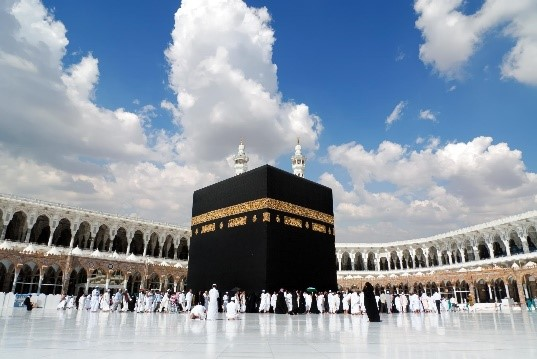
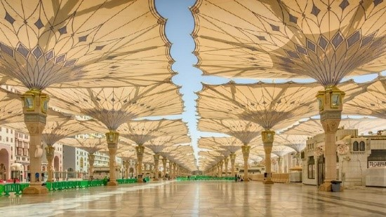
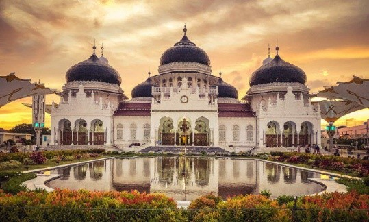
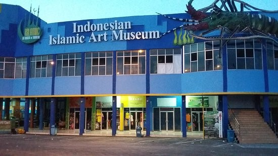

Rekomendasi Destinasi Wisata Religi di Dunia

Ada banyak sekali tempat wisata religi di dunia yang bisa dikunjungi dan tidak akan cukup jika harus disebutkan semua. Oleh karena itu, MAGI merekomendasikan beberapa tempat wisata religi terindah di Indonesia dan luar negeri yang bisa Anda jelajahi!
1. Mekkah, Arab Saudi

Mekkah merupakan tempat umat muslim dapat melaksanakan ibadah haji maupun umrah. Selain untuk beribadah, kamu dapat mengunjungi situs bersejarah seperti berziarah ke makam sahabat nabi atau Gua Hira. Namun sebelum melakukan ibadah haji, kamu harus ketahui syarat wajibnya yaitu harus mampu secara fisik maupun mental.
2. Madinah
Salah satu kota terindah yang harus masuk wishlist kamu saat bulan suci Ramadan. Kamu dapat berkunjung ke Komplek Masjid Nabawi yang memiliki arsitektur yang begitu indah. Juga, kamu bisa menikmati keindahannya saat siang dan malam hari dengan pemandangan yang berbeda saat payung masjid terbuka/tertutup.
3. Ziarah Wali Songo di Pulau Jawa

Wali Songo merupakan sosok yang sudah menyebarkan agama Islam di Pulau Jawa pada abad ke-14. Makam Wali Songo pun menjadi salah satu destinasi wisata religi yang sering dikunjungi oleh peziarah. Sembilan makam Wali Songo tersebar di Jawa Timur (5 makam), Jawa Tengah (3 makam) dan Jawa Barat (1 makam).
4. Masjid Baiturrahman, Aceh

Selain menjadi peninggalan kerajaan Aceh, masjid Baiturrahman adalah simbol perjuangan masyarakat Aceh pada saat penjajahan Belanda. Masjid Baiturrahman menjadi ikon istimewa Provinsi Aceh karena tetap bertahan di tengah bencana tsunami Aceh tahun 2004 silam.
5. Indonesian Islamic Art Museum

Museum yang terletak di Lamongan, Jawa Tengah ini menyimpan banyak koleksi seni dan artefak peninggalan kerajaan Islam yang berharga. Semua sejarah peradaban Islam di Indonesia bisa Anda saksikan di sini.